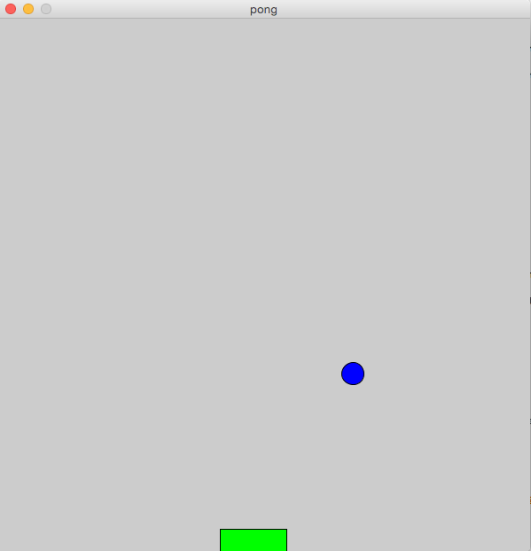

Pong

Goal:
Make a Pong game using Processing!
Steps:
- Draw a ball on the screen.
ellipse(x, y, width, height) //in draw method fill(red, green, blue) //in draw method stroke(red, green, blue) //in draw method
- Make the ball move across the screen (left to right). ...make a variable for the ball's X position and change it in the draw method.
- Change the speed of the ball.
- make a variable for the speed of the ball in the X direction (from left to right).
- changing this variable should change the speed of your ball
- Make the ball bounce off of the walls.
if(x > width){ xSpeed = -xSpeed; } - Do the same in the Y (up and down) direction. (hint) height
- Add a background image for your game.
PImage backgroundImage; //at the top of your sketch backgroundImage = loadImage("image.jpg"); //in the setup method image(backgroundImage, 0, 0); //in draw method image(backgroundImage, 0, 0, width, height); //if you want to resize - Draw a paddle at the bottom of the screen
rect(x, y, width, height);
- Use mouseX to make the paddle move over and back with the mouse.
- Make the ball change Y direction when it hits the paddle. Figure it out by yourself, or use this
method:
boolean intersects(int ballX, int ballY, int paddleX, int paddleY, int paddleLength) { if (ballY > paddleY && ballX > paddleX && ballX < paddleX + paddleLength) return true; else return false; } - Make sure you SAVE YOUR CODE when you are done.